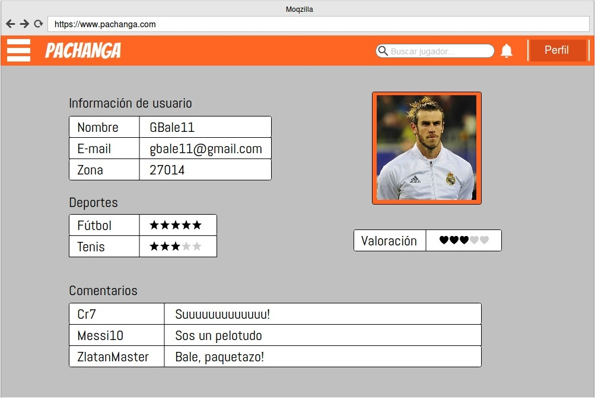

La página de inicio de la aplicación consiste en una barra de búsqueda de partidos, con filtrado por tipo de deporte, fecha y zona. Además, incluye un buscador de jugadores, un botón de notificaciones, y un botón de inicio de sesión.
La página de login será un formulario a completar por el usuario, con nombre de usuario y contraseña. De momento ignoramos la opción de recuperar la contraseña. Si el usuario no tiene cuenta, se le da la opción de crearla.
La página de registro también consistirá en un formulario, con el nombre de usuario (Se informará con un mensaje tipo "pop-up" si el nombre ya está registrado), la dirección de correo electrónico, el código postal (Que nos permitirá determinar la zona a la que pertenece el usuario) y la contraseña (Que opcionalmente tendrá determinados requisitos, como una longitud mínima y una mezcla de caracteres alfanuméricos).
El "hamburger menu" de la parte izquierda de la página despliega varias opciones. Este menú solo estará activo cuando el usuario tenga la sesión iniciada .
La primera opción del menú nos permite crear un partido. Podemos seleccionar el deporte, el número de participantes, la fecha y la hora en las que se quiere jugar y la zona en la que se jugará el partido (Más adelante se podrá especificar también el lugar en concreto, y de ahí se sacará la zona).
La segunda opción del menú nos permite crear un equipo. Será necesario especificar el nombre, el deporte al que está relacionado, el número de jugadores que habrá en el equipo y la zona a la que pertenece. También se podrá adjuntar un logo del mismo.
La tercera opción del menú nos permitirá ver los partidos que hemos jugado, especificando el deporte y la zona y fecha en la que se jugó. Podremos seleccionar cada uno de los partidos de la lista y ver los datos de los mismos.
En la página de datos del partido se podrá ver el resultado (Ganado o perdido) y los participantes (Indicando el resultado de cada uno de ellos, su skill en el partido y la valoración general que recibieron). Se podrá seleccionar a los participantes y ver su perfil.

El perfil de otros usuarios consistirá en su nombre, su zona, su foto, los deportes que practica (incluyendo su skill en cada uno de ellos), la valoración general del jugador y los comentarios recibidos. El usuario puede realizar comentarios en el perfil de otros jugadores.
El perfil del usuario logeado consistirá en su nombre, su correo electrónico, su zona, su foto, los deportes que practica (incluyendo su skill en cada uno de ellos), la valoración general recibida, y los comentarios recibidos de otros usuarios.
Tanto si buscamos en la barra de búsqueda de la página principal, como si seleccionamos la opción "Partidos cercanos" del menú, se mostrará una lista de partidos a los que el usuario se puede unir.
Para cada partido, se mostrará el deporte, los jugadores que ya se han apuntado, la zona del partido, la fecha y la hora, y la media de skill de los jugadores que se han apuntado.
Cuando el usuario selecciona un partido y le da a "Unirse", se envía una petición al usuario que creó el partido, y este le podrá aceptar o rechazar. Si el skill del usuario es menor a la media, saldrá un mensaje "pop-up" preguntando al usuario si de verdad quiere unirse a un partido con un skill más alto que el suyo. Si da a continuar, se enviará la solicitud y, en caso contrario, permanecerá en la página de partidos.
Si se selecciona la opción "Mejores jugadores" del menú, se mostrará una lista de los mejores jugadores de la zona registrada por el usuario. Sólo se mostrarán los jugadores de los deportes practicados por el mismo.
El botón de notificaciones de la parte superior derecha de la página será un pequeño menú "dropdown" con los mensajes importantes para el usuario (Nuevos comentarios en el perfil, peticiones de otros jugadores para unirse a uno de sus equipos, peticiones para unirse a partidos creados por el usuario, partidos finalizados, etc.). Si el usuario selecciona una de las notificaciones, esta le llevará a la página correspondiente.
Cuando al usuario hace click en una notificación para aceptar a un jugador, ya sea en uno de sus equipos o en uno de los partidos que ha creado, aparecerá una página en la que se pregunta si se quiere aceptar al jugador, con un pequeño "combo-box" con "Si" o "No", y un botón para ver el perfil del jugador antes de aceptarle o rechazarle.
Cuando el usuario da a "Enviar", se acepta o se rechaza al jugador y se le envía una notificación a este con el mensaje correspondiente.
Cuando el usuario ha terminado un partido (Esto se controla mediante una duración del partido al crearlo), recibe una notificación de partido terminado, y pasa a una página para apuntar el resultado del partido, en la que podrá seleccionar si ha ganado o perdido.
En Pachanga creemos en la honestidad de las personas, por lo que si no se selecciona el resultado correcto (Si hay más jugadores que han ganado que los que han perdido o viceversa), el partido no se registrará como jugado y no aparecerá en la lista de partidos del usuario.
Cuando se ha determinado el resultado del partido, el usuario pasará a la página de valoración de los participantes. Esta consistirá en un formulario en el que para cada jugador se determina el skill que ha demostrado y si ha sido agradable jugar con él.